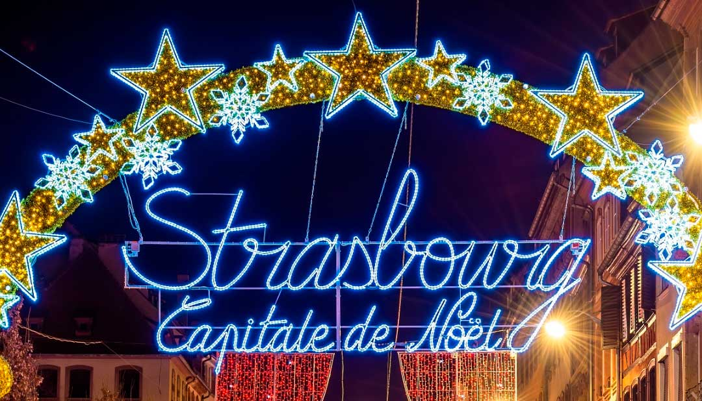

Страсбург
Сьогодні нас чекає екскурсія до чарівного Страсбургу, столиці регіону Ельзас. Страсбург є ідеальною увертюрою до всього, що є в Ельзасі: він ходить по тонкому канату між Францією та Німеччиною, між середньовічним минулим і прогресивним майбутнім, він виконує свою дію в неповторному ельзаському стилі. Батьківщина першої різдвяної ялинки та першої друкованої книги в Європі зберігає в собі безліч легенд та оповідей. Готичні собори та палаци, університети та парки, ресторани та кафе Страсбурга цілий рік наповнені туристами. Неповторність архітектурного вигляду центральної частини міста Гранд-Іль (Grande Ile), дозволила ЮНЕСКО внести її цілком у свій список Всесвітньої культурної спадщини. “Парламентська столиця Європи” завжди готова запропонувати цікаві місця та неймовірні емоції кожному своєму гостю, тому сюди повертаються знову і знову, адже місто закохує у себе та зачаровує.